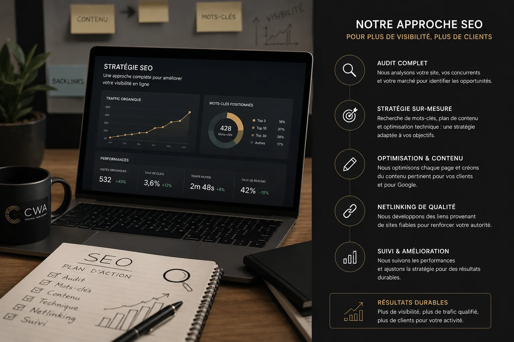

Le SEO local, c'est l'art d'apparaître dans les résultats Google quand quelqu'un cherche un professionnel près de chez lui. Pour un artisan, un coiffeur, un coach ou une esthéticienne, c'est souvent le canal d'acquisition le plus rentable qui soit. Et contrairement à la publicité payante, les résultats durent dans le temps.
Qu'est-ce que le SEO local exactement ?
Le SEO (Search Engine Optimization) local désigne l'ensemble des techniques qui permettent à un site web d'apparaître en bonne position sur Google pour des recherches liées à une zone géographique précise. Quand quelqu'un tape "plombier Vienne", "coiffeur Lyon 6" ou "coach sportif Bourgoin-Jallieu", Google affiche en priorité les professionnels de cette zone dont le site et la fiche Google sont bien optimisés.
Il existe deux types de résultats locaux : le Pack Local (la carte Google Maps avec les trois fiches qui apparaissent en haut) et les résultats organiques classiques en dessous. Bien travailler son SEO local, c'est viser les deux.
Le fondement : un site web bien structuré
Un site bien structuré aide les moteurs et les visiteurs à comprendre votre activité. Une fiche Google Business Profile peut aussi être visible sans site ; pour une stratégie locale complète, les deux supports peuvent se compléter.
La vitesse de chargement
Un chargement rapide améliore le confort de navigation. Mesurez le LCP, l’INP et le CLS lorsque des données terrain sont disponibles, puis identifiez les ressources à optimiser. Il n’existe pas de seuil de trois secondes qui provoquerait automatiquement une perte de positions.
L'optimisation mobile
Le site doit rester lisible et utilisable sur smartphone. Google utilise principalement la version mobile pour l’indexation : conservez les contenus utiles, les liens et les informations essentielles sur tous les écrans.
Les balises et la structure
Chaque page de votre site doit avoir un titre clair (balise H1), une description meta pertinente, et du contenu qui mentionne naturellement votre activité et votre zone géographique. Ce n'est pas du bourrage de mots-clés, c'est de la clarté pour Google et pour vos visiteurs.
Google Business Profile : votre vitrine locale la plus puissante
C'est gratuit, c'est puissant, et la majorité des indépendants ne l'optimisent pas correctement. Google Business Profile (anciennement Google My Business) est la fiche qui apparaît sur Google Maps et dans le Pack Local.
Pour l'optimiser efficacement :
- Renseignez les informations utiles : nom exact, coordonnées, horaires, site web et services. Une fiche incomplète peut manquer de clarté, sans être nécessairement invisible.
- Choisissez une catégorie principale fidèle à votre activité : elle aide Google à comprendre les services proposés.
- Ajoutez des photos représentatives : présentez vos réalisations, votre espace de travail ou votre équipe lorsque c’est pertinent.
- Utilisez les publications lorsque cela aide vos clients : actualités, promotions ou événements, sans en déduire une garantie de classement.
- Répondez aux avis : tous, positifs comme négatifs. Une réponse professionnelle à un avis négatif rassure autant qu'un avis positif.
Les avis Google : le levier le plus sous-estimé
Des avis authentiques peuvent contribuer à la confiance des visiteurs et à la notoriété locale. Ils ne permettent pas, à eux seuls, de prédire l’ordre des résultats : la pertinence et la distance interviennent également.
Comment obtenir des avis facilement : après chaque prestation réussie, envoyez un message simple à votre client avec le lien direct vers votre fiche Google. La plupart des gens sont ravis de laisser un avis si on leur simplifie la démarche. Ne demandez pas à vos proches de laisser de faux avis, Google détecte les comportements suspects et peut pénaliser votre fiche.
Les mots-clés locaux : cibler les bonnes requêtes
Un mot-clé local associe une activité et une zone, par exemple « électricien Lyon » ou « coach nutrition Bron ». Sa concurrence et son intérêt commercial dépendent du contexte ; ils doivent être étudiés plutôt que supposés.
Décrivez votre implantation et votre zone d’intervention réelle. Un artisan de Heyrieux peut préciser les communes qu’il dessert effectivement, sans multiplier les mentions de lieux ni créer des pages presque identiques.
Le SEO local ne demande pas un budget publicitaire. Il demande de la rigueur, de la constance et un site bien construit.
Les backlinks locaux : faites parler de vous
Un backlink, c'est un lien vers votre site depuis un autre site. Plus ces liens viennent de sources locales et pertinentes, plus Google considère votre site comme une référence dans votre zone.
Pour un indépendant, les sources de backlinks locaux les plus accessibles :
- Les annuaires locaux et professionnels : Pages Jaunes, Yelp, Hoodspot, Mappy, Cylex
- Les chambres de commerce et associations professionnelles de votre secteur
- Les partenariats avec d'autres professionnels locaux complémentaires
- La presse locale en ligne si vous avez une actualité à partager
Le contenu régulier : montrez que vous êtes actif
Publiez lorsque vous avez une réponse utile à apporter à vos clients et actualisez les informations devenues inexactes. Un article peut répondre à une recherche complémentaire ; sa fréquence de publication ne garantit pas une meilleure position.
Un article répondant à une question de vos clients peut devenir une porte d’entrée vers votre site. Vérifiez ensuite dans Search Console les requêtes et pages qui obtiennent effectivement des impressions et des clics.
Comment Central Web Agency intègre le SEO dans chaque site
Le SEO n'est pas une option qu'on ajoute après coup chez nous. C'est intégré dès la conception de chaque site. Structure HTML propre, balises optimisées, vitesse de chargement maximale, données structurées Schema.org, balises géographiques, canonical propres.
Nous travaillons avec les professionnels de Lyon, Vienne, Bourgoin-Jallieu, Heyrieux et de toute la région Auvergne-Rhône-Alpes, mais aussi dans toute la France. Chaque site est optimisé pour la zone géographique d'intervention réelle du client.
Le suivi se fait avec des mesures de performance et les données Search Console disponibles. Un score Lighthouse ne garantit ni une indexation rapide ni une position sur Google. Les améliorations doivent être évaluées sur les pages et les requêtes réellement concernées.